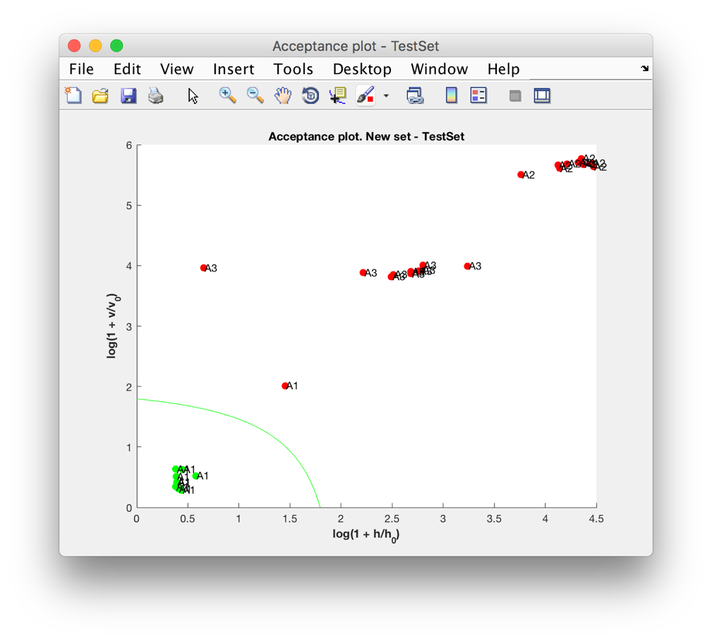

The DDSGUI module provides the graphical user interface for classes DDSimca and DDSTask.
Installation and first steps
To use the Tool you should set the Matlab current directory to the folder, which contains the files "DDSGUI.m", "DDSimca.m" and "DDSTask.m" or add this folder to the Matlab Path.
By default it is assumed that none of the built-in Matlab functions on the user's machine has been overloaded due to the use of a third-party toolbox.
Before you start working with the GUI you should load the data for analysis into the MATLAB workspace.
The model and result objects can be saved from the GUI to the MATLAB workspace.
Description
The GUI window is separated into 3 tabs: Model, Prediction and Options.
The main tab is the Model tab. The user controls on the tab allow to input the training data, set the model parameters as well as to view and save the results.
On the Prediction tab the user my apply the DD-SIMCA model to the new data set. The selection of the new data set variable and the labels is analogous to the Model tab. Click the Decide button to apply the currently loaded model to the new samples.
Examples
Working with the Model tab
To build a DD-SIMCA model:
On the Model tab click the Training Set button.
In the modal window select the matrix containing the training set.
Optionally click the Labels button to select the cell array of strings for names of samples in the data set.
Adjust the parameters of the model. It is possible to indicate a value of a type I error or switch to automatic calculation by checking the Auto checkbox
Click the Build button to create the model.
The results are now available in the Current model and Results and statistics sections.
Click on the Acceptance plot and Extreme plot buttons to study the results visually.
To get complete modelling results collected in a DDSimca object click the Save model button and select a name of the new model. It will be created in the Matlab workspace.
You can save your current workspace to a .mat file to preserve the results. Later on you can load the .mat file into the Matlab workspace and resume working with the model by clicking on the Load model button.
Click the Clear button to reset all the setting to default and to remove the current model.
Model tab
Warning: Some parameter settings (e.g. if the number of PCs is too high) can cause the model to become unstable. Such a model may provide erroneous result when applied to a New data set.
In such cases an informational message will appear in the Results and statistics section:
Calculations are not stable - change the number of PCs!. It is recommended to change the parameters and rebuild the model.
Not stable model
Visual analysis of the results
The Tool provides two visual representations of the classification results - the Acceptance and the Extreme plots.
Acceptance plot for training data
The Acceptance plot for the training data shows the acceptance (green line) and outlier tresholds (red line). The samples are separated into 3 possible categories: regular (green dot), extreme (yellow dot) and outlier (red dot). The goal of the Acceptance plot for the training set is to assist in creating a good model and to remove the outliers.
Extreme plot
The Extreme plot indicates how the observed number of the extremes is related to their estimated number.
For the selected number of PCs the Extreme plot is a tool for analysis of the quality of the classification model.
Working with the Prediction tab
To apply a DD-SIMCA model to the new data:
Here we assume that a model was previously created or loaded into the GUI by the Model tab.
On the Prediction tab click the New Set button.
In the modal window select the matrix containing the new data set.
Optionally click the Labels button to select the cell array of strings for names of samples in the data set.
By default a type II error is estimated for the new data set. It is possible to switch to a type I error calculation based on the predefined type II error.
Click the Decide button to apply the model to the new data set.
The results are now available in the Results and statistics sections.
Click on the Acceptance plot to study the results visually.
To get the results stored in a DDSTask object click the Save results button and select a name. It will be created in the Matlab workspace. Note that the DDSTask object contains all the data related to the analyzed task including the data sets as well as the related DDSimca model object.
You can save your current workspace to a .mat file to preserve the results. Later on you can load the .mat file into the Matlab workspace and resume the analysis by cliking on the Load results button.
Click the Clear button to reset all the setting to default and to remove the current model.
Prediction tab
Visual analysis of new data

Acceptance plot for new data
The Acceptance plot for the new data set shows the acceptance (green line) area. The samples are separated into two possible categories: samples that are considered as members of the target class (green dot) and non-members (red dot).
Working with the Options tab
The Options tab contains the visualization setting for the Acceptance plot, such as axes transformation and sample names.
Options tab
References
1. Pomerantsev A.L., Rodionova O.Ye. Concept and role of extreme objects in PCA/SIMCA. J. Chemom. 28, 2014. DOI: 10.1002/cem.2506.
2. Pomerantsev A.L., Rodionova O.Ye. On the type II error in SIMCA method. J. Chemom. 28, 2014. DOI: 10.1002/cem.2610